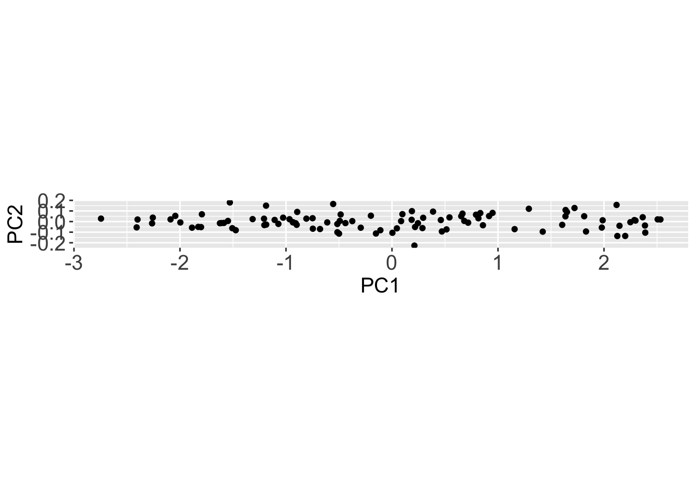
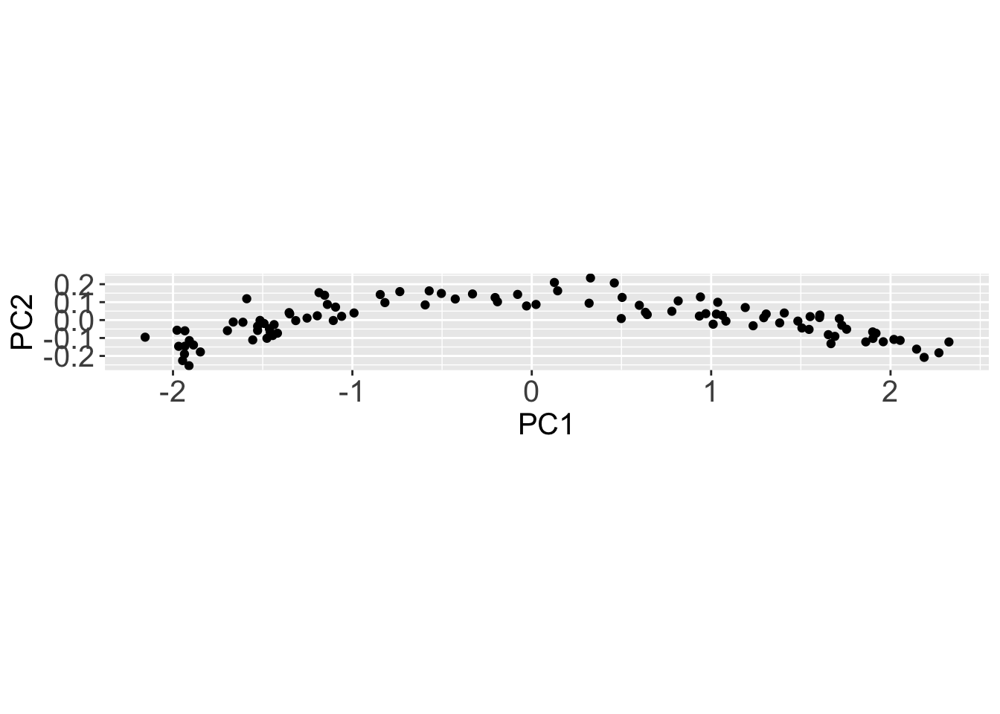

library(dplyr)
library(readr)
library(magrittr)
library(tidyr)
library(palmerpenguins)
library(tibble)
library(ggplot2)
library(readr)
library(here)
library(stringr)
library(broom)
theme_update(axis.title = element_text(size = 15),
axis.text = element_text(size = 15),
strip.text = element_text(size = 15))Unsupervised Learning - Explore your Data with Clustering and PCA
üößWork in Progress‚ö†Ô∏è
1 Introduction & Setup
1.1 References first
As always, my favorite references for unsupervised learning are:
- Introduction to Statistical Learning, chapter 12.
- Introduction to Data Science: chapter 34 and part of chapter 33.
- Chapter 16 of Tidy Modeling with R.
- A tutorial on Principal Component Analysis [PDF] by Jonathon Shlens.
There’s an additional reference that I really like, that explains Principal Components visually. Check it out!
1.2 Ok, but what is Unsupervised Learning?
Unsupervised learning might seem strange.
1.2.1 A quick recap about supervised learning
In order to define it, let’s first take a step back and remember what we have learned about supervised learning in the previous chapter. When run a supervised learning model, such as a linear regression model, we fit a function that is able to guess an outcome \(Y\) starting from the value of a series of predictors \(X_1, X_2, ..., X_n\), to our data. When we fit the model on our data, we basically estimate parameters for the model; in the linear regression example, those parameters would be the slope and intercept of the regression line. Once we have estimated those parameters, then we can then use statistical indicators to investigate if the model that we have selected and the parameters that we have estimated are explaining how \(Y\) responds to variations in the predictors \(X\). I they don;t the selected model might be inappropriate for our data, capturing only noise and no signal.
1.2.2 Let’s compare it to unsupervised learning
In supervised learning instead, we don’t have, or we don’t care to look at an outcome variable \(y\). We look only at a series of predictors \(X_1, X_2, ... X_n\), and explore if we can group our observation that make up each predictor in an interesting and insightful way. Since we don’t have an outcome variable \(Y\) that we could use to test the performance of our model, there is no real way to tell if our unsupervised model is “good” or “bad”. The model will probably show us some pattern in the data, and it’s up to us to investigate that pattern further to understand if they are useful or not.
1.2.3 Examples of unsupervised learning methods
The unsupervised learning methods that you have already heard about are probably:
- Clustering.
- Principal Component Analysis.
You could also hear the term dimension reduction pointing to unsupervised learning methods. This is a great way to describe them, since we often use those methods to reduce the dimensions (read: number of variables i.e. number of columns), of a complex multivariate dataset to a smaller, informative and more manageable subset or combination of them.
1.2.4 Examples of unsupervised learning questions
For example, we might be measuring a range of pollutants in many samples of soil from selected areas around the world. In this setup, the pollutants would be the variable/predictors of the data and each sample of soil would be an observation. We want to know if there are groups of soils with similar combination of pollutants, to investigate their history, and their effects.To achieve that we could clustering or PCA to.
Or, similarly, we might be measuring gene expression (observations) in many sample of different tumor tissues (variables/predictors). Want to look at those data to seek for patterns and understand if group of tumors have similar unexpected features. Again, we could use unsupervised learning to search for those patterns.
Coming back to the rice panicles dataset: The group that published the paper have measured many variables (predictors): rachis_length, primary_branch_length, primary_branch_number, secondary_branch_length, internode_length and so on. We might be interested to know if there are groups of rice accessions (observations) that share similar panicle features. For example, maybe there is an unexpected group of rice varieties with long secondary branches, short rachis, and few primary branches, or vice-versa.
It might be that we don’t even know which pattern we are looking for, we just want to know if there are groups of rice varieties with similar panicle features, so that later we can investigate those features. If our data are multivariate, and they often are, it is unlikely that we will manage to explore all the combination of features visually, so we can seek for pattern in the data with unsupervised learning, such as PCA or clustering.
We will use the rice panicle dataset to demonstrate how to run PCA and hierarchical clustering in R.
1.3 R packages
(the usual)
2 Principal Component Analysis
When we perform a Principal Component Analysis (PCA), we take the variables in our dataset and we use them to estimate new variables that are a linear combination of the original ones. The new variable will be orthogonal, thus uncorrelated to each others, and are called the principal components.
In detail, the transformation that we perform to estimate the principal components, are rotations of the original axis in a way that the first principal components corresponds to the main axis of variation of the original data, the second component corresponds to the second main axis of variation, orthogonal to the first one, and so on until we have as many components as are the variable of the original dataset.
Given the hypothesis that the main axis of variation collect the signal available in the dataset, and that the axis of minor variation collect only noise, the rotations (loadings) and the values projected on the principal components (scores) can provide us with valuable insights about pattern that were hidden in the original dataset, and about how many dimension we need to encode those pattern.
Let’s go through a naive example before running a PCA on the rice dataset.
2.1 A Naive Example on Synthetic Data
We generally use PCA to make sense of multidimensional (i.e. multivariate) datasets. Instead, For demonstration sake, before dealing with a complex dataset, let’s start from a simple example with data in 2 dimension. We will use this data to make clear the of how the PCA works and how to interpret it.
While plant leaves absorb blue and red light, they reflect green and IR light. Satellite images vegetated area will show huge reflectance values in those wavelength.
Let’s imagine that we have collected a dataset in two dimensions, storing:
- 2 variables: green and IR reflectance,
- 2000 observations, that cover a rectangular grid over a vegetated area.
Both variables will basically be a function of the vegetation density, plus some “noise” coming from atmospheric disturbance, different plant composition or else. Let’s imagine that we yet don’t know that.s
2.1.1 Generate the data
Let’s assume that the vegetation coverage v is measured in a value between 0 and 1. We can generate a v vector that stores 100 numbers sampled randomly from a uniform distribution, that simulates vegetation coverage values between 0.3 and 1.
size <- 100
v <- runif(size, min = 0.3, 1)IR and green reflectance will both be a linear function of the vegetation coverage stored in v, plus a small random noise.
reflectance <-
tibble(
ir = v*2 + rnorm(size, mean = 0, sd = .02),
green = v*1.3 + rnorm(size, mean = 0, sd = .02)
)So, the reflectance dataset looks like this:
reflectance# A tibble: 100 × 2
ir green
<dbl> <dbl>
1 1.15 0.760
2 1.09 0.688
3 1.34 0.838
4 1.39 0.916
5 1.06 0.683
6 0.906 0.618
7 0.728 0.478
8 1.68 1.13
9 1.94 1.24
10 0.801 0.502
# … with 90 more rows
# ℹ Use `print(n = ...)` to see more rowsIf we plot green vs. ir reflectance, we see right away that the two variables are higlhy correlated.
reflectance %>%
ggplot() +
aes(x = green,
y = ir) +
geom_point(alpha = .6) +
labs(title = "Reflectance")
2.1.2 Let’s run the PCA
To run the PCA, first we have to center the data at 0 and to scale them to z-scores.
This can be achieved with the function scale() from base R.
reflectance_scaled <-
reflectance %>%
scale() %>%
as_tibble()We call as_tibble() after scale() because the scale function returns a matrix-like object, while for simplicity, we tend to work with tibble dataframes.
Let’s plot the centered and scaled data to see what they look like.
reflectance_scaled %>%
ggplot() +
aes(x = green,
y = ir) +
geom_point(alpha = .6) +
labs(title = "Reflectance, scaled")
We can see that now the two variables (ir and green reflectance) are both centered at zero and roughly in range (-2, 2). The scale of the variables has changed, but the main pattern in the data is unchanged.
Let’s use the function prcomp() to run a principal component analysis on this dataset, and store the results in the object pca.
pca <-
reflectance_scaled %>%
prcomp()The ouput of prcomp() is a list with 5 elements in it:
sdesv: the standard deviation of each component.rotation: the matrix of variable loading, indicating how the original dataset was rotated.x: the projection of our original data on the principal components, which is a dataset that has the same dimensions of our original data (in this case 2x2000).centerandscale, the center and scale used (if centering and scaling was performed before, they should approximate to 0).
class(pca)[1] "prcomp"typeof(pca)[1] "list"ls(pca)[1] "center" "rotation" "scale" "sdev" "x" Let’s interpret the PCA results from an Exploratory Data Analysis point of view, and learn what each of those
2.1.3 Analytical interpretation of PCA results
pca$x %>%
as_tibble() %>%
ggplot() +
aes(x = PC1,
y = PC2) +
geom_point() +
coord_fixed()
pca$sdev %>%
as_tibble() %>%
mutate(pc = c('PC1', 'PC2')) %>%
ggplot() +
aes(x = pc,
y = value) +
geom_col()
2.2 Data
We will keep working on the rice dataset.
rice <-
paste0('https://raw.githubusercontent.com/othomantegazza',
'/mawazo-summer-school/main/data-int/rice.csv') %>%
read_delim(delim = ';') %>%
janitor::clean_names()
# define colors
rice_colors <-
c(Or = '#b5d4e9',
Os = '#1f74b4',
Ob = '#c0d787',
Og = '#349a37')rice_simple <-
rice %>%
sample_n(50)
rice_simple %>%
select(species, rachis_length_rl_in_cm:spikelet_number_sp_n) %>%
mutate(species = paste(species, 1:n())) %>%
column_to_rownames('species') %>%
mutate_all(~scales::rescale(., to = c(0,1), from = range(.))) %>%
dist() %>%
hclust() %>%
plot()
rice_simple %>%
select(species, rachis_length_rl_in_cm:spikelet_number_sp_n) %>%
mutate(species = paste(species, 1:n())) %>%
column_to_rownames('species') %>%
mutate_all(~scales::rescale(., to = c(0,1), from = range(.))) %>%
as.matrix() %>%
heatmap()
rice_pc <-
rice %>%
select(species, rachis_length_rl_in_cm:spikelet_number_sp_n) %>%
mutate(species = paste(species, 1:n())) %>%
column_to_rownames('species') %>%
# mutate_all(~scales::rescale(., to = c(0,1), from = range(.))) %>%
prcomp(center = T, scale = T)
rice_pc_data <-
rice_pc %>%
augment() %>%
bind_cols(rice)
rice_pc_data %>%
ggplot(aes(x = .fittedPC1,
y = .fittedPC2,
colour = species)) +
geom_point() +
scale_color_manual(values = rice_colors)
rice_pc$sdev
rice_pc$rotation %>%
as.data.frame() %>%
rownames_to_column(var = 'measurement') %>%
pivot_longer(-measurement,
names_to = 'component',
values_to = 'rotation') %>%
filter(component %in% c('PC1', 'PC2')) %>%
ggplot(aes(y = measurement,
x = rotation)) +
geom_col() +
facet_grid(rows = vars(component))